BLACKOUT: candidate artwork for review
A. Environments: Poly Haven (CC0) panoramas, flat views
Photographed real spaces. The tag says how each could serve the story. Poly Haven licence: CC0 (polyhaven.com/license).
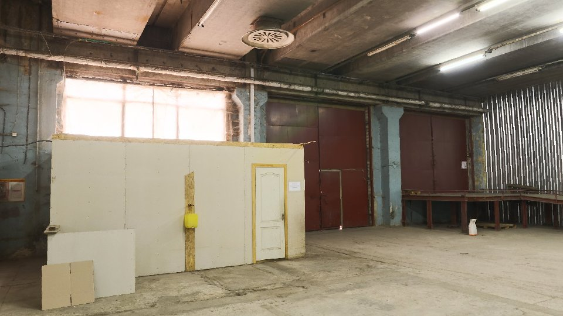
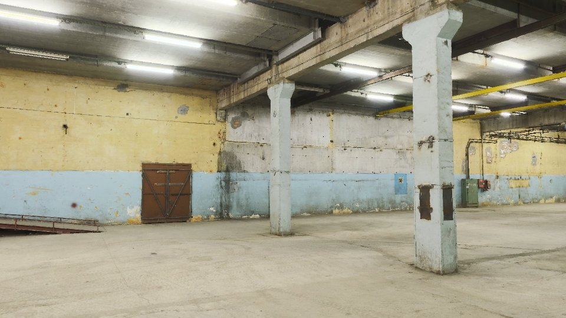
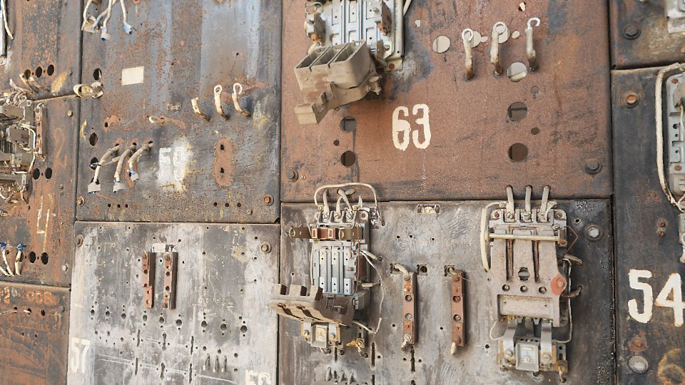
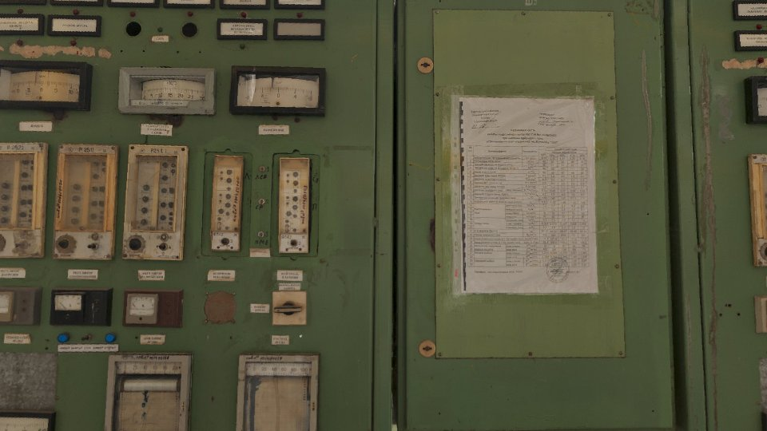
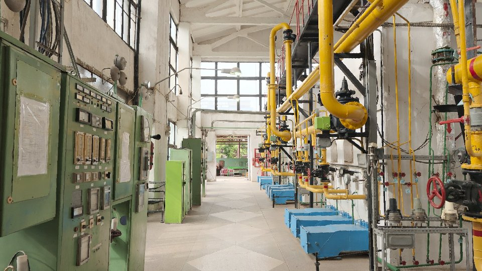
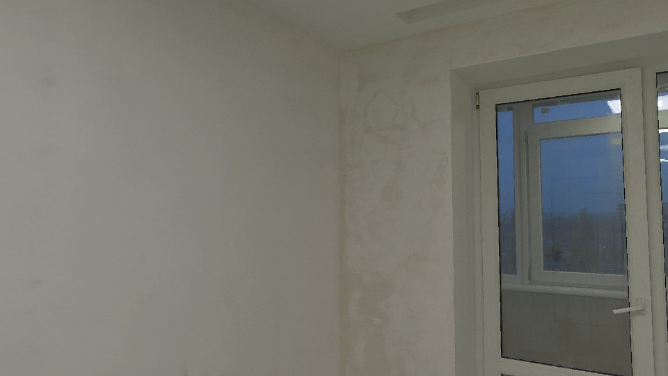
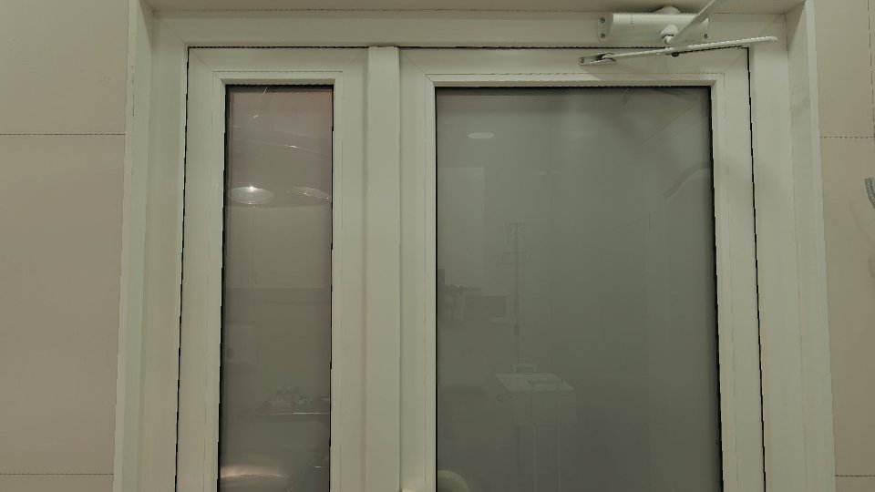
B. Props: Poly Haven (CC0) 3D models, usable only through Blender renders
These are 3D models (.blend/glTF). They cannot be shown in the current image renderer directly; they would have to be placed in a Blender scene and rendered to PNG. Blender is not installed on this machine.
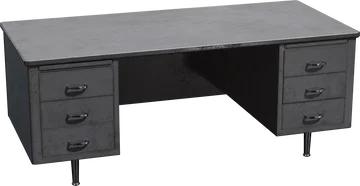
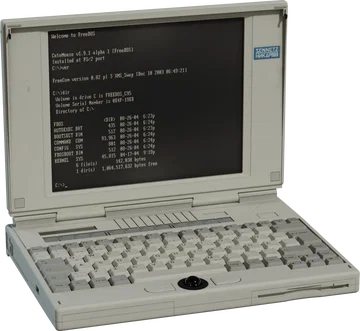
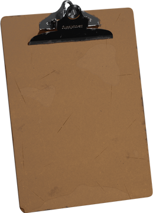
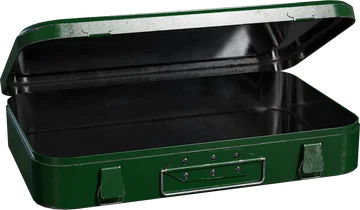
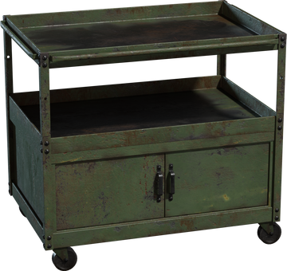
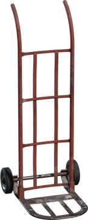
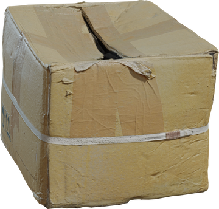
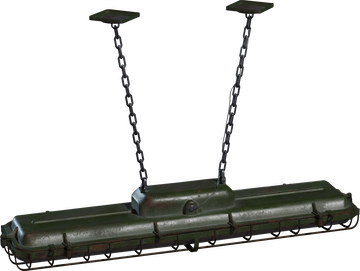
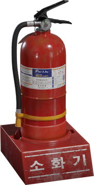
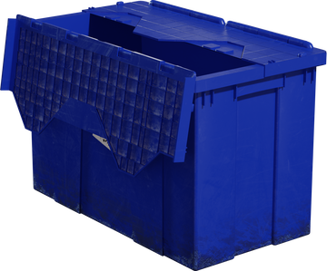
Poly Haven has no computer monitor, terminal or server-rack model, and no tall warehouse racking model; the nearest items are a laptop, a storage cart, a hand truck and boxes.
C. Characters: what exists
Blender Studio Human Base Meshes v1.4.1 (CC0)
Bundle downloaded and inspected (blender.org/download/demo-files; 49 MB; needs Blender 4.2+). These are bare, colour-coded sculpting base meshes: no hair, clothing, skin textures, rig poses or facial expressions.
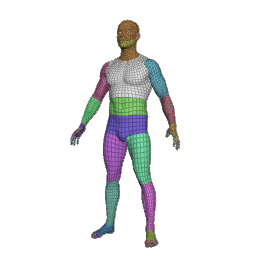
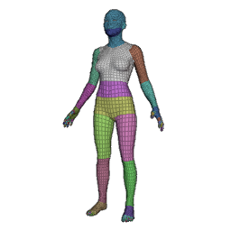
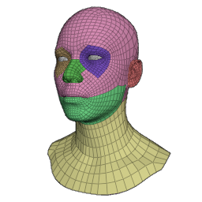
MakeHuman community assets (CC0) via MakeHuman or the MPFB2 Blender add-on
Licence text read from the MakeHuman repository (LICENSE.md, LICENSE.ASSETS.md): bundled assets are CC0 and the project claims nothing over renderings. The asset packs include natural skins (including Indian female and male), hair, eyebrows, eyes, casual/elegant/work suits, shoes, sitting and other poses, and ARKit-style face units for expressions. The images below are the pack thumbnails of clothing and hair only: they are not finished characters, and I have not generated any.
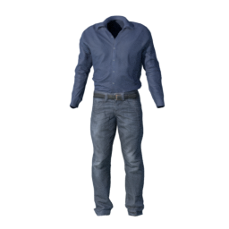
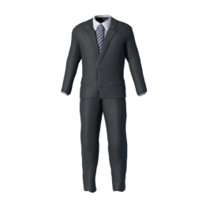
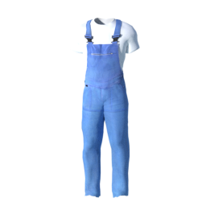
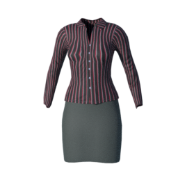
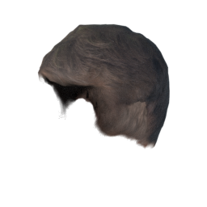
Verdict: a consistent cast is technically possible (MakeHuman + MPFB2 + Blender, rendering six fixed characters with one camera and lighting setup), but it needs software that is not installed and a sizeable new pipeline. No ready-made image of any recurring character exists.
F. Pilot: one character rendered from CC0 MakeHuman assets in Blender
Arjun, concerned expression: CC0 MakeHuman body, skin, hair, eyebrows and shirt, expression from the CC0 ARKit face-unit targets, rendered in Blender 4.5 with an inverted-hull ink outline (frontend/tools/art/render_character.py). No AI, no drawing. Not approved and not used in the game.
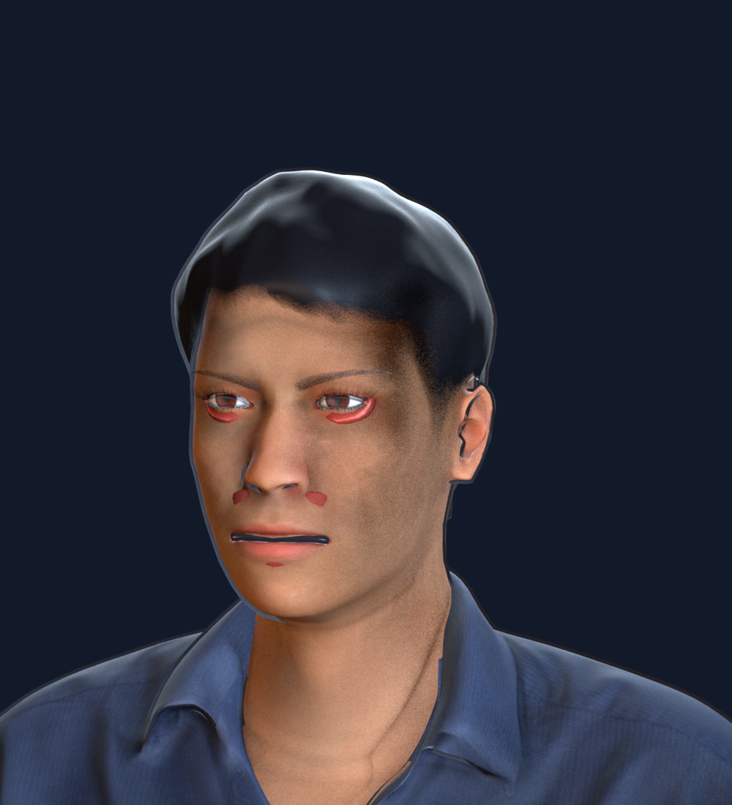
D. Current stand-ins already in the project (for comparison)
Six Wikimedia Commons photographs integrated earlier (cropped/resized) with credits in docs/ART_ASSETS.md. They are listed here so you can compare them with the candidates above; their status is unchanged.
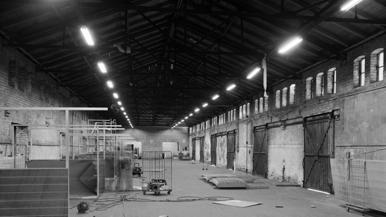
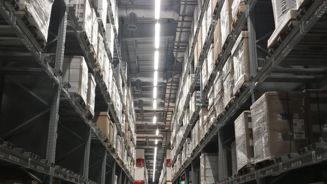
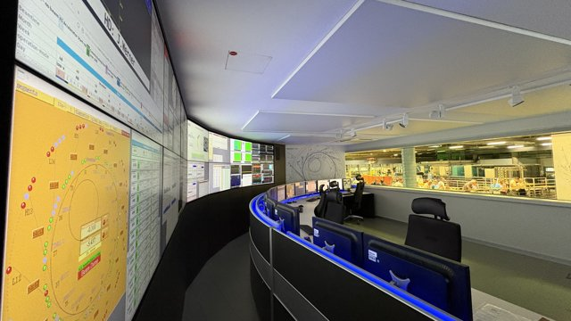
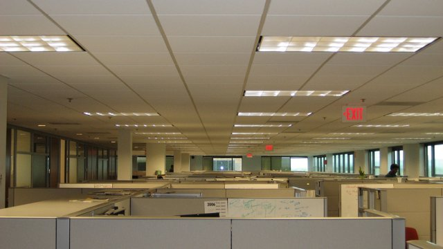
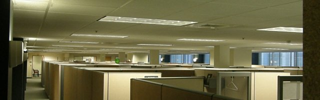
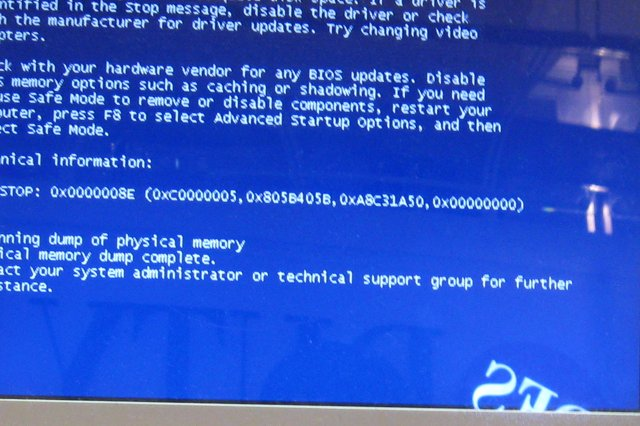
E. Slot-by-slot classification
| Slot | Best candidate | Class | Notes |
|---|---|---|---|
| Wide warehouse (blackout) | Commons "VR Warehouse interior" (CC BY) or Poly Haven Empty Warehouse 01 (CC0) | Suitable existing asset found (empty hall); better with props via render | Neither shows medical stock. A dark grade or a rendered "lights out" version would need Blender. |
| Warehouse aisle / racking depth | Commons "Interior of an Warehouses" (CC BY) | Suitable existing asset found | Brand-free racking aisle. |
| Control room / terminals | Commons BESSY II control room (CC0) | Suitable (partial): bright and working | No failed-state version exists; Poly Haven Boiler Room has an analogue panel only. |
| Failed terminal / evidence | Commons "Blue Screen of Death on Internet Terminal" (CC0) | Suitable existing asset found | Real crashed screen, cropped to text. |
| Operations office (2 slots) | Commons "Cubicle land" (PD), "Cube Farm" (CC BY) | Suitable (partial) | Poly Haven office HDRIs are empty rooms; they would need furniture and monitors from a Blender scene. |
| Arjun close-up | none | No suitable asset found | Would require MakeHuman character + Blender render (approval needed). |
| Director reaction | none | No suitable asset found | Same. |
| Kavya, Nisha, Raghav, Isha (later chapters) | none | No suitable asset found | Same pipeline would serve all six if approved. |